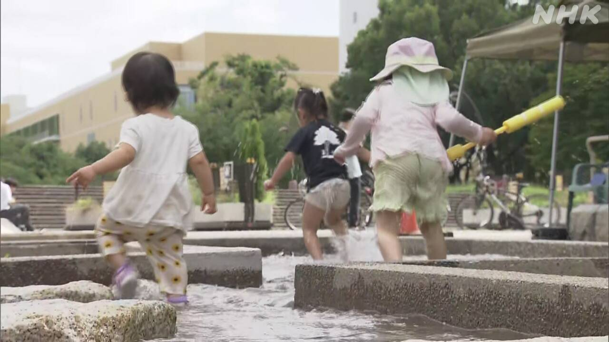
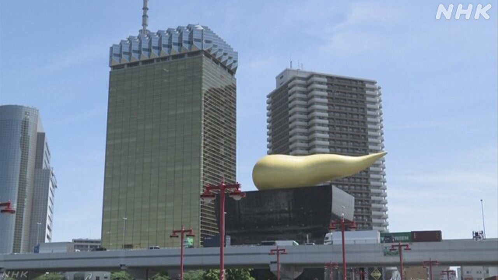
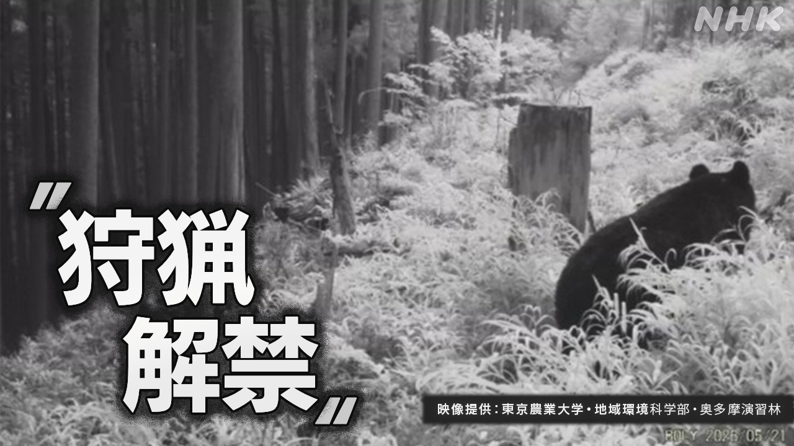
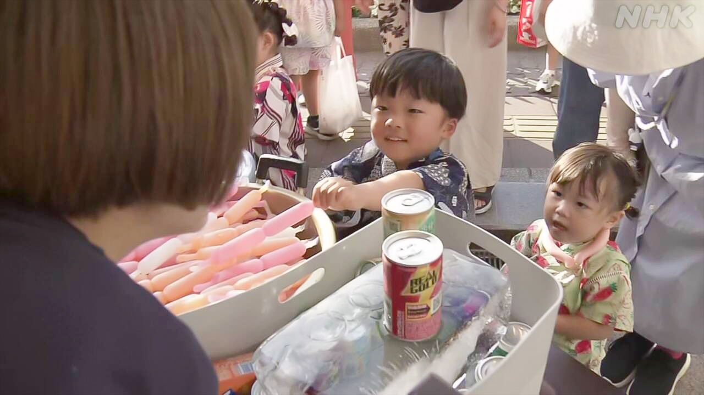

最新ニュース
1️⃣ 九州北部と中国地方と近畿地方で梅雨が終わった

8日は、九州から北海道まで多くの場所で、よく晴れました。
気象庁は「九州の北のほうと、中国地方、近畿地方で梅雨が終わったようだ」と言いました。いつもの年より11日早いと言っています。
そして、8日はとても暑くなりました。
福岡県などで気温が35℃以上になった所がありました。東京も30℃以上になりました。
気象庁によると、このあとも暑い日が続きそうです。
熱中症にならないように、エアコンを使って部屋を28℃以下にしてください。暑い日は、喉がかわいていなくても少しずつ水を飲むようにしてください。
2️⃣ 飲み物の会社「アサヒ」 利益は36.7%少なくなった

ビールなどの飲み物の会社「アサヒグループホールディングス」は、去年サイバー攻撃を受けました。
コンピューターのシステムが動かなくなって、工場で作った品物を店などに出すことができなくなりました。前のように品物を出すまでに4か月以上かかりました。
会社は、去年品物を売って入ったお金などを、5か月遅れて7月8日に発表しました。
利益は、前の年に比べて36.7%少なくなりました。
会社は、システムを直すためなどに、たくさんのお金がかかったと言っています。
3️⃣ 東京都 銃を使って熊を捕まえることを考えている

東京でも山などで熊の被害が続いています。
7日檜原村で、熊にあった人が道から10ｍ下に落ちてけがをしました。
ことし5月には奥多摩町で、山に登っていた人が熊に襲われてけがをしました。
東京都は、20年ぐらい前からツキノワグマを捕まえることをルールで禁止しています。
しかし、熊の被害をなくすためにルールを変えることを考えています。
銃を使って熊を捕まえることができるようにしたいと考えています。
4️⃣ 北海道函館市 七夕の行事「ろうそくもらい」があった

7月7日は七夕でした。
北海道の函館市で「ろうそくもらい」という昔から続いている行事がありました。
浴衣を着た子どもたちが家を回って、昔はお祭りなどで使うろうそくをもらっていました。
今は、ろうそくの代わりにお菓子をもらいます。この行事は100年以上続いています。
子どもたちは「ろうそく1本ちょうだいな」と元気よく歌ってお菓子をもらっていました。
男の子は「友達と一緒に回るので楽しいです。いちばんうれしかったのはドーナツです」と話していました。
- 〜から〜まで
- 〜まで
- 〜から
- 〜ようだ / 〜みたいだ
- 〜方
- 〜より
- 〜ている / 〜でいる
- 〜ても / 〜でも
- 〜以上
- 〜になる
- 〜ところ
- 〜など
- 〜がある / 〜がいる
- 〜後 / 〜あと
- 〜によると
- 〜そうだ
- 〜てください / 〜でください
- 〜ように
- 〜ならない
- 〜ようにする
- 〜なくて
- 〜ず / 〜ずに
- 〜こと
- 〜ことができる
- 〜までに
- 〜ため
- 〜くらい / 〜ぐらい
- 〜ため(に)
- 〜という
- 〜ので
vebaev.github.io
Generated: 2026-07-08 14:12:44 UTC